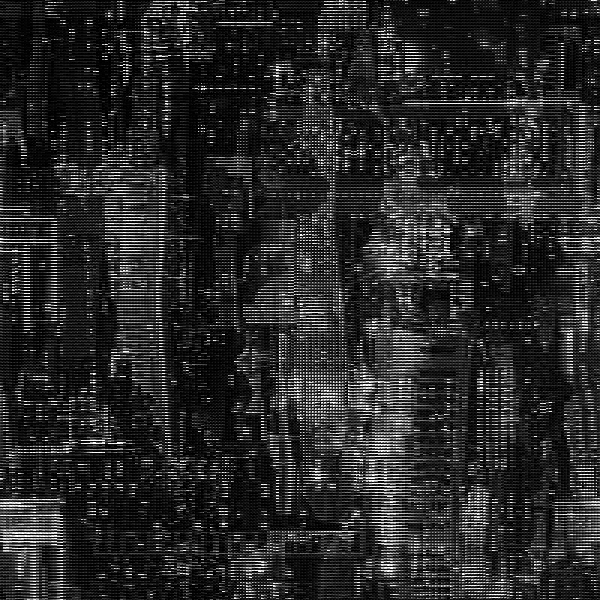
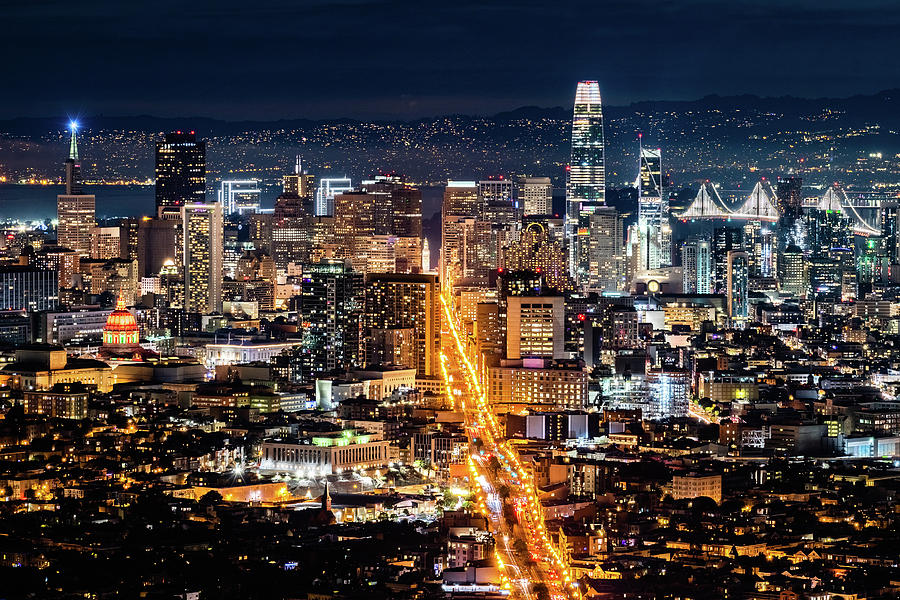
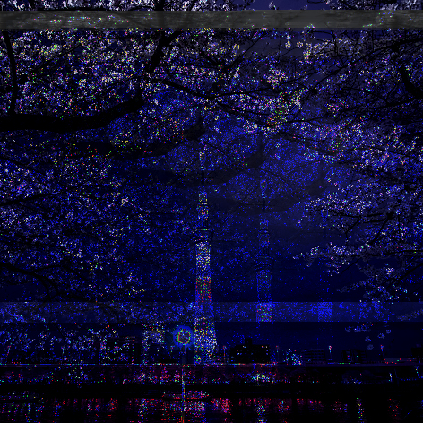
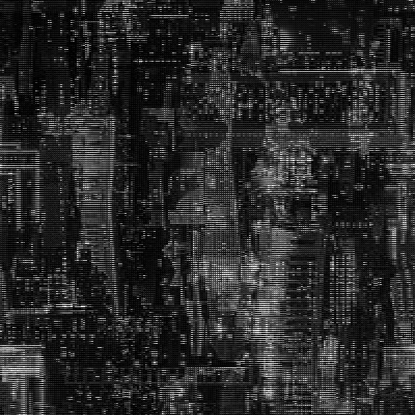
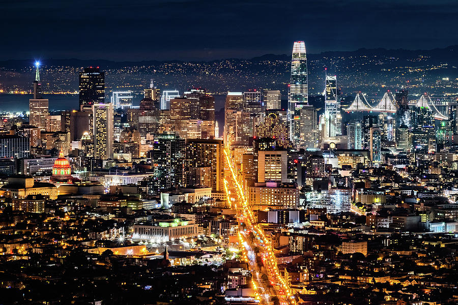
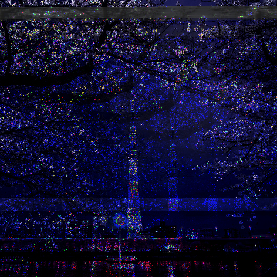

Glitch Art.
This is my first project I did in art 74 class!

 






Source
www.fineartamerica.com/featured/2-hong-kong-night-view-hisao-mogi.html
www.flickr.com/photos/115244152@N04/30973969118
www.timeout.com/tokyo/things-to-do/best-night-views-in-tokyo